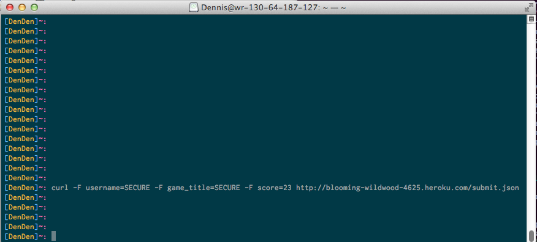
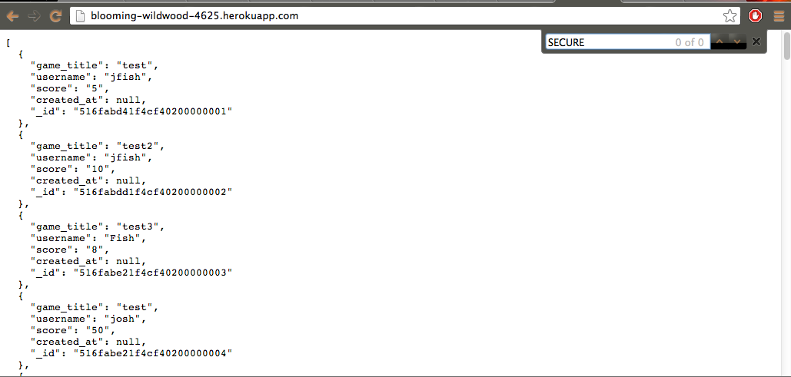
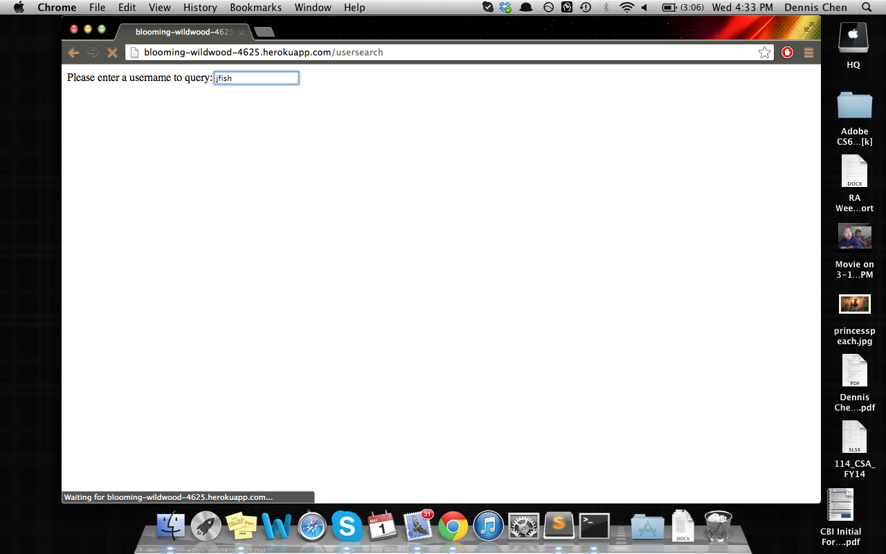
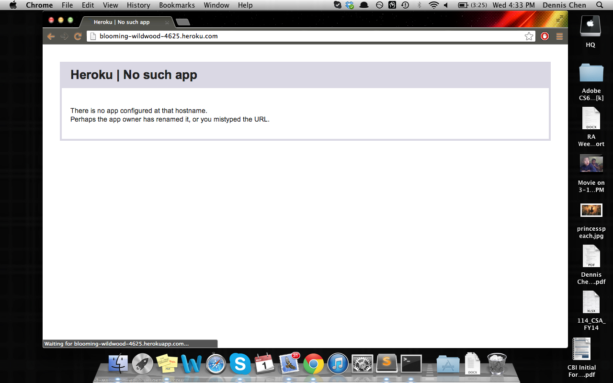
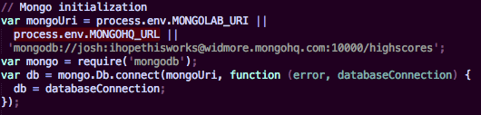
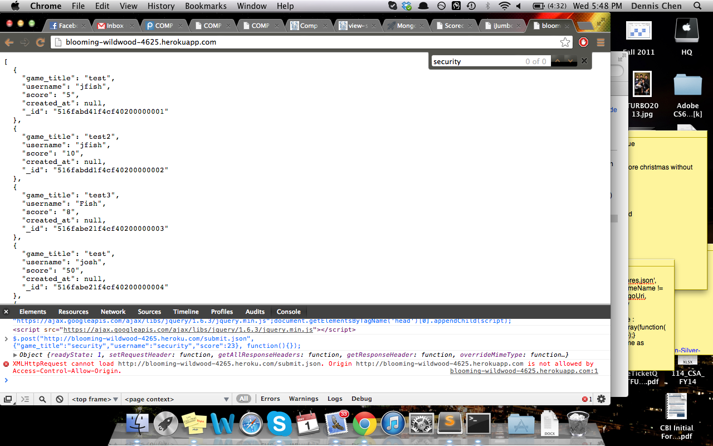

Securitiy Analysis: Scorecenter
Introduction
Students of Ming Chow's Web Programming class have had the pleasure of creating a scorecenter where games can go to post player highscores to keep track of them. With a combination of node, express and mongo, the students have successfully created a server-side web application to display data scores.
Methodology
The scorecenter being tested is at: http://blooming-wildwood-4625.herokuapp.com/, and the source code for the application is there as well.
To test the application, first I looked at all the pages just to get a good glimpse of how things were. A number of different techniques were used to find security vulnerabilities inside of the code including inputting scripts and SQL injection. After looking at the source code, it looked like there was some information that could be gathered very easily, for example the username and password to the mongohq database. Also, curl was used for posting data
Abstract of Findings
Here are some of the main issues at hand:
- Note: Posting scores to the scorecenter has given several errors. See below.
- Low reliability
- When a score is submitted, the web application does not check to see if the score is a number and so technically, a user could have score "Hello"
- No limit on input text
- Information about where the data is stored is directly in the code.
- Cannot post from other sites (Cross-Origin Sharing)
Issues Found
- Scorecenter throws errors when trying to post
- Location: submit.json
- Severity of issue: HIGH - When posting some scores, the system throws errors instead of putting the data into the database.
- Description: When a user tries to submit a score, if the scorecenter isn't reliable, then the user wouldn't want to ever use the scorecenter! Below are a couple of examples where this happens. Curl did not work and neither did json posting.


- Resolution: The best way to solve this is to test putting in data and checking to see how everything works. The owner of the scorecenter was worked with to see if this problem could be alleviated but it was to no avail. The database was stagnant and only showed things that were previously in it (including grading tests).
- No limit on input text
- Location: submit.json
- Severity of issue: Medium - There is no limit to what the user can input and so technically, they could put in a very long username to run you out of data
- Description: With no limit on characters for what the user can input as a username of game_title, then the user can just post a very long username and that would take up lots of space.
- Resolution: Limit the amount of characters a score can post to something more reasonable
- Low Reliability
- Location: Entire scorecenter
- Severity of issue: Medium - Scorecenter occasionally fails and will not load
- Description: Sometimes the scorecenter hangs for a bit and then redirects to an error page where it says the site is down. It will load /usersearch but will not take in any input. It will not load /index.


- Resolution: This is definitely a problem because if users cannot access the site, then there is no point in having it. And so a possible fix is to look over the code again and see why it is failing sometimes.
- No score input validation
- Location: submit.json
- Severity of issue: HIGH - Users can insert what they want into the database including pop ups!
- Description: Input from attackers could include or contain script tags that would constantly come up when the scorecenter was loaded. For example, if they used script alert("IM A HACKER!"), a pop with that text would come up. This can be quite annoying.
- Resolution: In order to get rid of this worriesome issue, the web application must block against those script tags by sanitizing and/or cleaning the input of html/tags.
- Leaking Private Information
- Location: web.js
- Severity of issue: HIGH - If anyone gets a hold of web.js there exists a password
- Description: If web.js were to be discovered, there is a small part of code that includes a user and password to the database. This then allows attackers to modify and change the data to however they like!

- Resolution: Hide the information similar to using "process.env.MONGOHQ_URL". That way, They do not have direct access.
- No Cross Origin Sharing
- Location: all
- Severity of issue: HIGH - Users cannot post from other sites because CORS is not working properly
- Description: If CORS is not enabled, the scorecenter will have trouble and send back errors to games that try to post because it is not successfully allowing them to post. It is not giving access to them.

- Resolution: Enable CORS by putting in the correct code to allow for POST. This can be done by allowing: "res.header('Access-Control-Allow-Methods', 'POST');" in addition to what the scorecenter currently has.
Conclusion
There are a couple of problems with the web application itself before security can be taken into account. The problems include an unreliable web server and the inability to post to the scorecenter. When security is taken into account, the web app is prone to injections as well as infinite character usernames/game_titles. Some recommendations for this web app is to first look into the code itself and check Cross-Origin Sharing and whether or not games can post to it.
By bribing some CS students with delicious cookies, they could fix this up very quickly!